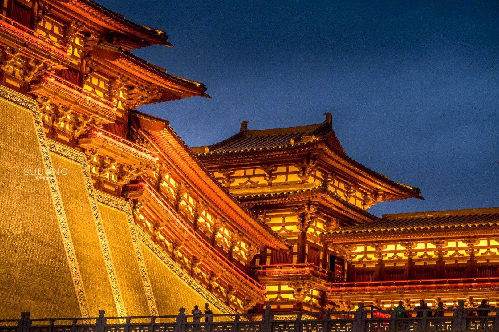

三天行程：
第一天：洛阳博物馆 - 关林庙 - 龙门石窟 - 隋唐洛阳城国家遗址公园 。
上午：抵达洛阳后，前往洛阳博物馆，这里馆藏丰富，能让你深入了解洛阳的历史文化 。
下午：参观关林庙，感受关羽的忠义精神，它是我国唯一的冢、庙、林三祀合一的古代经典建筑 。之后前往龙门石窟，欣赏壮观的石刻艺术，建议下午晚点去，可以看到白天和夜晚不同的美景 。
晚上：到隋唐洛阳城国家遗址公园，欣赏应天门、明堂天堂的夜景，感受古都的辉煌 。
第二天：白马寺 - 洛阳老街 。
上午：前往白马寺，这是中国第一古刹，有众多风格各异的建筑，拍照很出片 。
晚上：游览洛阳老街，如丽景门、十字街，品尝当地特色美食，体验老洛阳的风情 。
第三天：老君山一日游 。
上午：出发前往老君山，建议乘坐索道上山，可以欣赏到十里画屏等美景 。
下午：继续游览老君山，欣赏自然风光，感受大自然的壮阔 。
四天行程 ：
第一天：西工小街 - 九洲池 。
上午：抵达洛阳后，前往西工小街，品尝地道小吃，如小街天府的担担面等 。
下午：可以换装汉服，前往九洲池，体验汉服夜游 。
第二天：古墓博物馆 - 白马寺 - 民主街 。
上午：参观古墓博物馆，提前预约并可聘请官方讲解，深入了解古墓文化 。
下午：前往白马寺，感受古刹的宁静与庄严 。
晚上：漫步民主街，探寻美食 。
第三天：洛阳博物馆 - 龙门石窟 - 明堂天堂 。
上午：提前预约参观洛阳博物馆，了解洛阳的历史 。
下午：前往龙门石窟游览 。
晚上：前往明堂天堂，欣赏夜景 。
第四天：老君山一日游